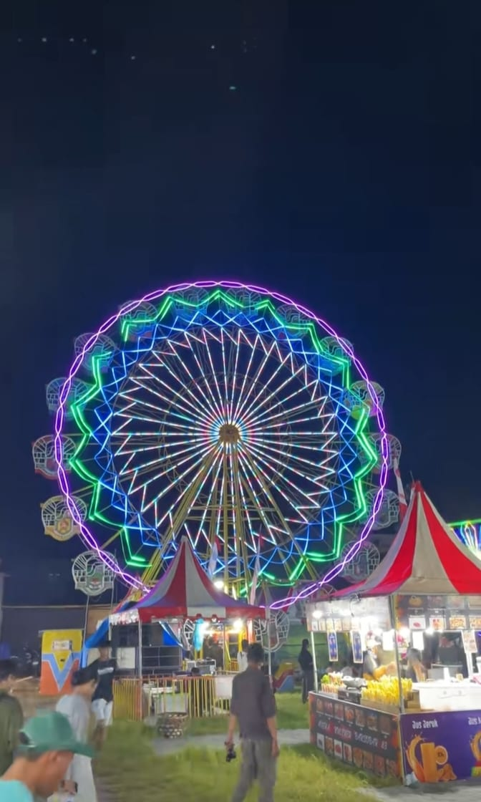
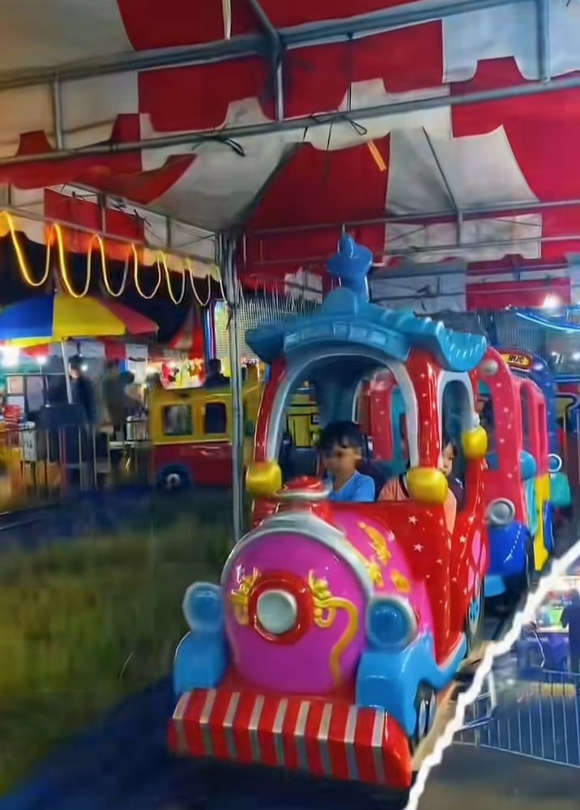
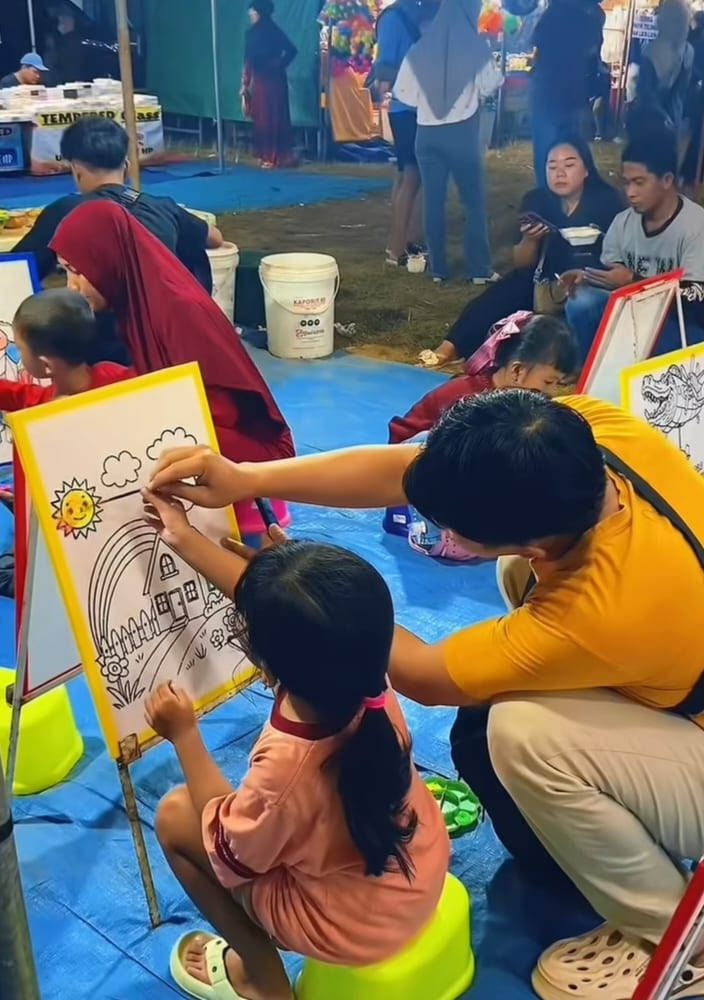
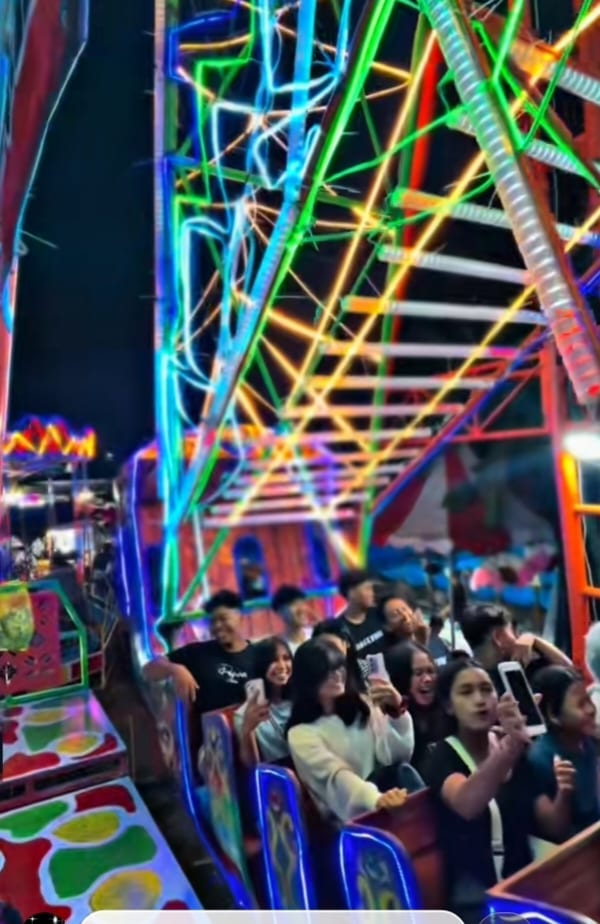
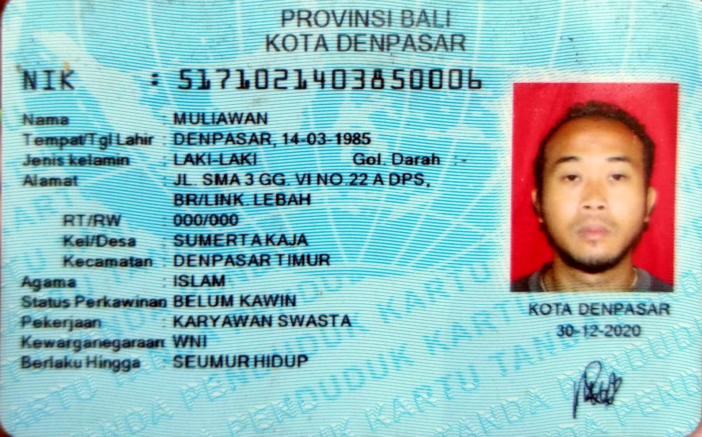
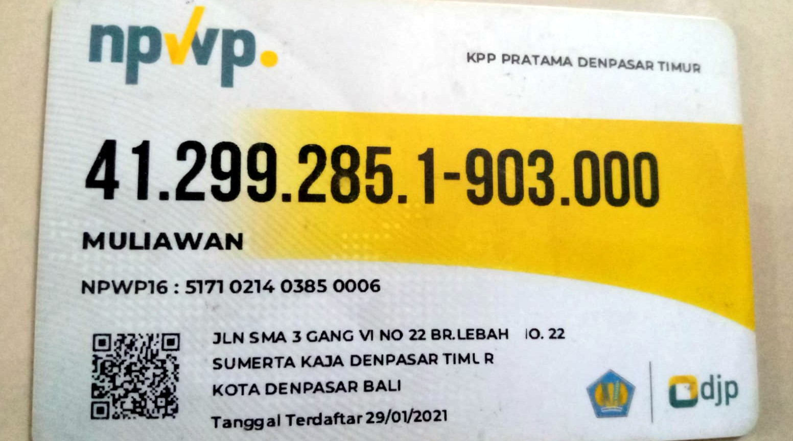

Permohonan Izin · Rev. 01 Kabupaten Klungkung
Provinsi Bali · 2026
Pasar malam, kembang api & kebersamaan
Pesta RakyatMahottama
Sepuluh malam kebersamaan di Klungkung: wahana keluarga, panggung seni, sentra UMKM, dan Pesta Kembang Api pada malam pergantian tahun.
Diajukan kepada Pemerintah Kabupaten Klungkung sebagai bahan penawaran kerja sama. Peran, pembiayaan, dan dukungan perizinan dirinci secara terbuka dalam proposal ini.
Penerima penawaran
Pimpinan Daerah Kabupaten Klungkung
Dengan hormat, proposal ini kami ajukan kepada Bapak Bupati dan Bapak Wakil Bupati Klungkung sebagai permohonan izin penyelenggaraan Pesta Rakyat Mahottama.
Kami memahami bahwa penyelenggaraan acara di ruang publik memerlukan pertimbangan yang cermat. Karena itu, proposal ini disusun dengan skema kerja sama penyelenggaraan: pembiayaan kegiatan diusulkan menjadi tanggung jawab penyelenggara, sementara Pemda berperan pada perizinan, koordinasi, dan dukungan publikasi. Skema parkir akan mengikuti ketentuan yang berlaku apabila disepakati.
Kami mohon perkenan Bapak Bupati dan Bapak Wakil Bupati agar proposal ini dapat dipresentasikan dan ditindaklanjuti sesuai ketentuan yang berlaku.
Maksud penawaran
Kami mengajukan izin penyelenggaraan dan dukungan koordinasi, bukan permohonan anggaran daerah. Rincian pembiayaan, peran, dan usulan penerimaan parkir diuraikan dalam proposal.
Foto: dokumentasi resmi Pemerintah Kabupaten Klungkung.
Klungkung, 24 November 2026
I Made Satria
c.q. Sekretaris Daerah Kabupaten Klungkung
Dinas Pariwisata
Dinas Koperasi, UKM, Perindustrian dan Perdagangan
Wakil Bupati Klungkung
Tjokorda Gde Surya Putra
di Klungkung
Surat pengantar
Permohonan Izin Penyelenggaraan Pesta Rakyat Mahottama
Om Swastyastu,
Dengan hormat, melalui surat ini kami Minang Bali Jaya (NIB 622205230019664; NPWP 41.299.285.1-903.000) menyampaikan permohonan izin penyelenggaraan Pesta Rakyat Mahottama, sebuah pasar malam keluarga yang menghadirkan wahana hiburan rakyat, panggung seni, sentra kuliner, dan ruang usaha bagi pelaku UMKM Klungkung, ditutup dengan Pesta Kembang Api pada malam pergantian tahun.
Kami tidak mengajukan permohonan anggaran daerah. Rencana pembiayaan kegiatan diusulkan menjadi tanggung jawab penyelenggara sesuai kesepakatan. Pemerintah Kabupaten Klungkung kami mohon berkenan memberikan izin penyelenggaraan, izin pemanfaatan lokasi, koordinasi keamanan dan lalu lintas, serta dukungan publikasi melalui kanal resmi daerah.
Sebagai bagian dari penawaran kerja sama, kami mengusulkan area parkir dengan pemungutan retribusi resmi: Rp4.000 untuk sepeda motor dan Rp6.000 untuk mobil, sesuai Perda Kabupaten Klungkung Nomor 8 Tahun 2019 dan Perda Kabupaten Klungkung Nomor 4 Tahun 2026 tentang Pajak Daerah dan Retribusi Daerah. Dengan ilustrasi moderat 50.000 kunjungan, estimasi retribusi parkir adalah ±Rp55,3 juta untuk sepuluh malam. Angka ini adalah ilustrasi perencanaan, bukan jaminan, dan realisasinya mengikuti karcis, kunjungan aktual, serta ketentuan daerah.
Besar harapan kami permohonan ini mendapat perkenan dan kesempatan untuk dipresentasikan. Atas perhatian dan dukungan Bapak Bupati dan Bapak Wakil Bupati, kami ucapkan terima kasih.
Om Santi, Santi, Santi, Om.
Hormat kami,
Muliawan
Penanggung Jawab · Minang Bali Jaya
NIK 5171021403850006
Nomor: 001/MBJ/PRM/XI/2026
Tanggal: 24 November 2026
Lampiran: 1 berkas proposal
Perihal: Permohonan izin penyelenggaraan acara
Ikhtisar penawaran
Ringkasan Eksekutif
Pesta Rakyat Mahottama adalah festival pasar malam keluarga selama sepuluh malam di Klungkung. Proposal ini menguraikan rencana acara, pembagian peran, pembiayaan oleh penyelenggara, serta ilustrasi penerimaan parkir yang perlu disepakati.
oleh penyelenggara
skenario moderat 10 malam
selama sepuluh malam
22–31 Desember 2026
Pembiayaan penyelenggara
Rencana biaya produksi dan operasional ditanggung penyelenggara sesuai kesepakatan. Rincian estimasi ada pada BAB XI.
Retribusi parkir · ilustrasi
Jika skema parkir disetujui, tarif motor Rp4.000 dan mobil Rp6.000 mengikuti ketentuan, karcis resmi, dan realisasi kunjungan.
Dampak ekonomi lokal · target
Target ±80 lapak UMKM, ±150 tenaga kerja lokal, panggung seniman, dan kunjungan yang menggerakkan usaha warga.
Pembiayaan kegiatan diusulkan oleh penyelenggara. Penyelenggara menyiapkan tim produksi, wahana, panggung, dan operasional sesuai lingkup yang disepakati. Peran Pemda adalah perizinan, koordinasi lintas instansi, dan dukungan publikasi.
Apabila skema retribusi parkir disepakati, penerimaan disetor ke kas daerah sesuai peraturan dan penyelenggara tidak mengambil bagian dari retribusi tersebut. Angka parkir dalam proposal ini adalah ilustrasi perencanaan yang perlu diverifikasi bersama Pemda.
Prinsip penawaran
Rencana pembiayaan, peran, dan pembagian penerimaan dituangkan dalam kesepakatan. Ilustrasi parkir bukan jaminan dan tidak menggantikan ketentuan resmi.
Pokok penawaran
| Skema | Kerja sama penyelenggaraan sesuai kesepakatan |
| Ilustrasi parkir | Rp29,6–89,5 juta moderat Rp55,3 juta · 10 malam · bukan jaminan |
| Rencana biaya penyelenggara | ±Rp720.500.000 estimasi |
| Durasi | 10 malam · 22–31 Desember 2026 |
| Lokasi usulan | Lapangan Puputan Klungkung atau lokasi kesepakatan |
| Puncak acara | Pesta Kembang Api · 31 Desember, 00.00 WITA |
Peta dokumen
Daftar Isi
Struktur proposal disusun mengikuti alur pengambilan keputusan: dari dasar dan konsep, menuju manfaat dan skema kerja sama, lalu rancangan teknis, rundown, keselamatan, dan rencana biaya penyelenggara.
Dasar penawaran
Pendahuluan
Akhir tahun adalah ruang bersama. Pesta Rakyat Mahottama dihadirkan untuk mempertemukan keluarga, pelaku usaha, dan seniman Klungkung dalam satu perayaan yang dekat, terjangkau, dan terkelola—dengan skema kerja sama penyelenggaraan yang dirinci dalam proposal.
1.1 Latar Belakang
Akhir tahun adalah masa libur terpanjang bagi keluarga, pelajar, dan wisatawan. Kebutuhan akan hiburan yang terjangkau, aman, dan dekat dengan rumah meningkat tajam pada periode ini. Pasar malam dan pesta rakyat telah lama menjadi ruang pertemuan masyarakat Bali: orang tua membawa anak naik wahana, pedagang menggelar dagangan, dan seniman tampil di hadapan warganya sendiri.
Klungkung memiliki modal budaya yang kuat dan posisi strategis di jalur wisata Bali bagian timur. Namun perayaan akhir tahun yang terpusat dan terkelola baik masih dapat diperkuat. Pesta Rakyat Mahottama hadir untuk mengisi ruang tersebut dengan konsep yang ramah keluarga, melibatkan pelaku usaha lokal, dan ditutup dengan pertunjukan kembang api sebagai simbol harapan menyambut tahun baru.
Kami memandang perayaan akhir tahun bukan sekadar hiburan. Ia adalah kesempatan untuk menggerakkan ekonomi warga, memberi panggung bagi seni tradisi, dan menyediakan alternatif perayaan yang tertib bagi masyarakat. Karena itu, rancangan acara ini menempatkan keselamatan, keterlibatan lokal, dan pertanggungjawaban sebagai fondasi, bukan pelengkap.
Penawaran ini disusun dengan prinsip kemitraan yang terukur: pembiayaan kegiatan diusulkan oleh penyelenggara, sementara peran Pemda, dukungan perizinan, dan usulan penerimaan parkir dirinci secara terbuka. Skema final dituangkan dalam kesepakatan agar tidak ada klaim yang melampaui kewenangan para pihak.
Positioning acara
Pasar malam keluarga dengan pengalaman yang lengkap—bukan sekadar konser musik. Fokus pada kenyamanan keluarga, harga terjangkau, dan ruang usaha lokal.
Kata kunci
Ramah keluarga Lokal Tertib Kerja sama Ilustrasi parkir
Prinsip yang dipegang
Aman
Uji kelayakan dan pengawasan harian.
Tertib
Sirkulasi, parkir, dan kapasitas terukur.
Inklusif
Ruang untuk UMKM dan seniman lokal.
Berdampak
Indikator yang dilaporkan terbuka.
1.2 Maksud
Menyelenggarakan perayaan rakyat akhir tahun yang aman, tertib, dan meriah di Kabupaten Klungkung melalui skema kerja sama penyelenggaraan, serta membuka potensi penerimaan retribusi parkir bagi daerah apabila disepakati.
1.3 Tujuan
- Menyediakan hiburan keluarga yang terjangkau bagi masyarakat Klungkung dan sekitarnya.
- Menggerakkan ekonomi lokal melalui lapak UMKM, kuliner, dan kerajinan.
- Memberi panggung bagi seniman, sanggar, dan talenta muda Klungkung.
- Meningkatkan kunjungan wisatawan dan citra Klungkung sebagai destinasi perayaan akhir tahun.
- Menghadirkan perayaan pergantian tahun yang terpusat, tertib, dan terkendali, sehingga mengurangi kerumunan tidak terkelola di titik-titik lain.
- Menjadi agenda tahunan yang dapat dikembangkan dalam kalender event daerah.
- Membuka potensi penerimaan retribusi parkir bagi Kas Daerah Kabupaten Klungkung sesuai ketentuan yang berlaku.
- Menunjukkan model event rakyat dengan pembiayaan yang terencana dan tata kelola yang transparan.
Keluaran yang direncanakan
Sepuluh malam operasional yang konsisten, laporan kunjungan dan transaksi UMKM, laporan parkir, dokumentasi acara, serta evaluasi bersama Pemerintah Kabupaten Klungkung.
Batas penawaran
Penawaran ini tidak mengajukan permohonan anggaran daerah. Rencana biaya penyelenggara bersifat estimasi indikatif; jumlah personel, spesifikasi, dan lingkup final disesuaikan setelah survei lokasi, kesepakatan jumlah wahana, dan arahan teknis instansi berwenang.
Rancangan pengalaman
Konsep Acara
Satu lokasi, empat zona, dan alur yang mudah dibaca. Pengunjung datang untuk wahana, tinggal untuk panggung dan kuliner, lalu pulang dengan cerita.
16.00–23.00 WITA
dalam satu alur kunjungan
31 Desember hingga 00.15
2.1 Identitas Acara
Nama: Pesta Rakyat Mahottama
Tema: Merayakan Kebersamaan, Menyambut Harapan Baru
Format: festival pasar malam keluarga dengan tiket masuk terjangkau atau gratis masuk dengan tiket per wahana
Jam buka: 16.00–23.00 WITA setiap malam
Lokasi usulan: Lapangan Puputan Klungkung, Kabupaten Klungkung
Model kerja sama: perizinan dan koordinasi; usulan pembiayaan kegiatan oleh penyelenggara sesuai kesepakatan; retribusi parkir mengikuti ketentuan
Nama Mahottama dipilih sebagai penghormatan pada warisan Klungkung dan semangat kebersamaan warga. Identitas visual acara akan menggunakan palet hangat, tipografi yang terbaca, dan material lokal—tanpa mengurangi keterbacaan di ruang publik.
2.2 Segmen Pengunjung
- Keluarga dengan anak — segmen utama, terutama pada 24–25 Desember.
- Remaja dan pelajar — panggung musik, kompetisi bakat, dan wahana pendukung.
- Pasangan muda dan komunitas — kuliner, foto, dan malam tematik.
- Wisatawan domestik — libur Natal dan Tahun Baru.
- Wisatawan mancanegara — pengalaman pasar malam Bali yang autentik.
2.3 Zona Utama dan Area Parkir
| Zona | Isi | Fungsi | Catatan pengelolaan |
|---|---|---|---|
| Zona Wahana | Bianglala, komidi putar kuda, odong-odong, dan wahana keluarga lainnya. | Daya tarik utama dan sumber pendapatan. | Operator tetap, papan tarif, batas usia dan tinggi. |
| Zona Panggung | Panggung utama seni budaya, musik, dan hiburan. | Menjaga suasana dan memperpanjang waktu kunjungan. | Rundown ketat, sound diarahkan menjauhi permukiman. |
| Zona Kuliner & UMKM | Food court, jajanan tradisional, kerajinan, dan produk lokal. | Penggerak ekonomi masyarakat. | Kurasi tenant, QRIS, pengelolaan sampah terpilah. |
| Zona Anak & Keluarga | Area bermain, permainan ketangkasan, dan foto. | Memperkuat posisi sebagai pasar malam ramah keluarga. | Area terpisah dari jalur kendaraan dan wahana cepat. |
| Area Parkir | Motor dan mobil dengan akses terkendali. | Potensi penerimaan retribusi daerah sesuai ketentuan. | Karcis resmi, tarif motor Rp4.000 dan mobil Rp6.000 sesuai perda, bila skema disetujui. |
Tabel 2.1 · Zona utama, area parkir, dan fungsi operasional
2.4 Alur Pengalaman
Masuk tanpa hambatan
Gerbang utama, plaza informasi, papan jadwal, dan loket tiket yang jelas.
Wahana sebagai magnet
Bianglala dan komidi putar menjadi penanda lokasi; wahana anak dikelompokkan.
Panggung dan kuliner
Pertunjukan berganti setiap malam; food court ditempatkan di jalur pulang.
Keluar dengan aman
Jalur keluar terpisah, penerangan memadai, dan titik temu keluarga.
2.5 Opsi Tiket
| Opsi | Mekanisme | Kelebihan |
|---|---|---|
| A · Gratis masuk | Pengunjung membayar per wahana atau per permainan. | Hambatan masuk rendah; ramah keluarga besar. |
| B · Tiket terusan | Satu tiket harian untuk area dan wahana tertentu. | Pendapatan lebih terukur; antrean lebih terkendali. |
Pendapatan tiket dan wahana adalah pendapatan penyelenggara. Retribusi parkir adalah pendapatan daerah dan tidak dibagi ke penyelenggara. Opsi tarif tiket akan dikonsultasikan agar tetap terjangkau.
2.6 Prinsip Desain Acara
- Mudah dibaca: zona, tarif, dan jalur evakuasi terlihat dari titik masuk.
- Ramah anak: area bermain jauh dari jalur servis dan wahana cepat.
- Lokal: material, tenant, penampil, dan kru diprioritaskan dari Klungkung.
- Tidak membludak: kapasitas dan alur keluar-masuk dihitung sejak awal.
Nilai untuk daerah
Manfaat dan Potensi Penerimaan Daerah
Penawaran ini tidak mengajukan anggaran daerah. Apabila skema parkir disepakati, kegiatan berpotensi memberi penerimaan retribusi yang dapat dihitung dan disetor sesuai ketentuan.
Rencana pembiayaan kegiatan
MandiriBiaya produksi dan operasional diusulkan ditanggung penyelenggara sesuai lingkup kesepakatan. Rincian estimasi ada pada BAB XI.
Ilustrasi retribusi parkir · skenario moderat
±Rp55,3 jtSepuluh malam, dengan tarif sepeda motor Rp4.000 dan mobil Rp6.000 sesuai ketentuan. Angka ini bukan jaminan.
Penawaran ini tidak mengajukan belanja daerah. Penyelenggara mengusulkan pembiayaan kegiatan, sementara potensi penerimaan parkir dihitung sebagai ilustrasi perencanaan yang perlu disepakati dan diverifikasi bersama Pemda.
Apabila skema parkir disetujui, setiap kendaraan yang masuk ke area parkir resmi menjadi objek retribusi. Pemungutan dilakukan dengan karcis resmi dan disetor ke kas daerah sesuai peraturan yang berlaku. Penyelenggara menyiapkan area, rambu, dan petugas parkir sebagai bagian dari rencana operasionalnya.
Di luar parkir, kegiatan ini menargetkan ±80 pelaku UMKM, panggung bagi seniman lokal, dan kunjungan yang menambah denyut ekonomi Klungkung. Manfaatnya tidak berhenti di gerbang parkir, tetapi tetap bergantung pada realisasi acara.
3.1 Dasar Hukum dan Tarif
Retribusi parkir mengacu pada Perda Kabupaten Klungkung Nomor 8 Tahun 2019 dan Perda Kabupaten Klungkung Nomor 4 Tahun 2026 tentang Pajak Daerah dan Retribusi Daerah. Tarif yang digunakan dalam ilustrasi ini adalah Rp4.000 untuk sepeda motor dan Rp6.000 untuk mobil per kendaraan.
Pemungutan dilakukan dengan karcis resmi daerah. Seluruh penerimaan disetor ke kas daerah; penyelenggara tidak mengambil bagian dari retribusi parkir. Tata cara dan tarif final mengikuti ketentuan yang ditetapkan Pemda.
Ringkasan dasar pemungutan
| Perda 8/2019 | Retribusi parkir |
| Perda 4/2026 | Pajak Daerah dan Retribusi Daerah |
| Sepeda motor | Rp4.000 / kendaraan |
| Mobil | Rp6.000 / kendaraan |
| Penerima | Kas daerah Kabupaten Klungkung |
Angka dalam proposal adalah ilustrasi perencanaan, bukan penetapan tarif.
3.2 Ilustrasi Penerimaan Parkir
Tiga skenario kunjungan dengan asumsi yang konservatif dan dapat diverifikasi.
| Skenario | Kunjungan | Karcis motor | Karcis mobil | Estimasi retribusi |
|---|---|---|---|---|
| Konservatif | 35.000 | 5.688 | 1.138 | Rp29.580.000 |
| Moderat basis proposal | 50.000 | 10.313 | 2.344 | Rp55.316.000 |
| Optimis | 65.000 | 16.575 | 3.868 | Rp89.508.000 |
Tabel 3.1 · Ilustrasi retribusi parkir untuk 10 malam
Asumsi: satu karcis per kendaraan per kunjungan; tingkat tangkapan parkir 65% (konservatif), 75% (moderat), 85% (optimis); komposisi motor 50–60% dan mobil 20–28%; okupansi 2 orang per motor dan 4 orang per mobil. Kendaraan tenant, kru, dan undangan tidak dihitung. Realisasi mengikuti karcis dan kunjungan aktual.
Estimasi bruto retribusi parkir 10 malam, dalam juta rupiah.
Rincian skenario moderat
| Sepeda motor | 10.313 × Rp4.000 | Rp41.252.000 |
| Mobil | 2.344 × Rp6.000 | Rp14.064.000 |
| Total | 10 malam | Rp55.316.000 |
Setara ±Rp5,5 juta per malam dan ±Rp1.100 per kunjungan.
3.3 Dampak Ekonomi dan Sosial
prioritas Klungkung
selama periode acara
selama 10 malam
Retribusi parkir, bila skema disetujui, merupakan manfaat yang relatif terukur. Namun nilai kegiatan ini lebih luas: perputaran uang di lapak UMKM, honor bagi seniman dan kru lokal, serta kunjungan yang menggerakkan transportasi, kuliner, dan usaha warga.
Pelaksanaan membutuhkan izin, koordinasi lintas instansi, dan penetapan pemungutan parkir sesuai perda. Rincian pembiayaan dan pembagian peran dituangkan dalam kesepakatan, sehingga tidak ada kewajiban yang diasumsikan secara sepihak.
Potensi tambahan
Di luar parkir, kegiatan dapat membuka ruang pembahasan untuk retribusi reklame, pemanfaatan aset daerah, dan pajak daerah lain sesuai ketentuan. Angka dalam proposal ini sengaja hanya menghitung parkir agar tetap konservatif.
Satu skema kerja sama
Skema Kerja Sama dan Perizinan
Pemda berperan pada perizinan dan koordinasi. Penyelenggara mengusulkan pembiayaan kegiatan serta menyiapkan area parkir sesuai lingkup yang disepakati.
Peran Pemda
Izin & koordinasiPerizinan, koordinasi lintas instansi, dukungan publikasi, dan penetapan pemungutan parkir sesuai ketentuan.
Ilustrasi penerimaan parkir
ParkirTarif motor Rp4.000 dan mobil Rp6.000; ilustrasi moderat ±Rp55,3 juta untuk 10 malam, bukan jaminan.
4.1 Peran Masing-masing
| Pihak | Peran |
|---|---|
| Pemerintah Kabupaten Klungkung | Izin penyelenggaraan dan pemanfaatan lokasi; koordinasi Kepolisian, Satpol PP, Dishub, Damkar; penetapan tarif dan karcis parkir; dukungan publikasi; penerimaan retribusi sesuai ketentuan. |
| Penyelenggara | Mengusulkan dan menanggung biaya produksi serta operasional sesuai kesepakatan; penyediaan area parkir, rambu, dan petugas; keamanan, medis, kebersihan; dan asuransi. |
Tabel 4.1 · Pembagian peran
4.2 Mekanisme Usulan Penerimaan Parkir
- Pemda menetapkan lokasi parkir dan tarif sesuai peraturan daerah.
- Penyelenggara menyiapkan area, rambu, dan petugas parkir.
- Pemungutan dilakukan dengan karcis resmi daerah.
- Penerimaan disetor ke kas daerah sesuai ketentuan.
- Rekonsiliasi harian dan laporan akhir disampaikan kepada Pemda.
Yang kami ajukan
- Izin penyelenggaraan dan pemanfaatan lokasi.
- Koordinasi keamanan, lalu lintas, pemadam, dan kesehatan.
- Penetapan tarif dan karcis parkir resmi.
- Dukungan publikasi melalui kanal resmi Pemda.
Komitmen kami
- Menanggung pembiayaan kegiatan sesuai lingkup kesepakatan.
- Menyiapkan area parkir, rambu, dan petugas.
- Menjaga keselamatan, kebersihan, dan asuransi acara.
4.3 Profil Singkat Penyelenggara
Minang Bali Jaya adalah penyelenggara event dengan pengalaman dalam produksi acara, pengelolaan wahana keluarga, dan tata kelola pengunjung. Profil lengkap, legalitas, dan portofolio dilampirkan pada dokumen ini.
Tim inti terdiri dari direktur acara, manajer operasional, koordinator keamanan, koordinator keuangan, dan hubungan pemerintah. Seluruh tim bekerja dengan prosedur keselamatan dan pelaporan yang sama. Dokumentasi pelaksanaan kegiatan sebelumnya dapat dilihat pada bagian 6.3 Dokumentasi Kegiatan.
Identitas penyelenggara
| Nama | Minang Bali Jaya |
| Penanggung Jawab | Muliawan |
| NIK | 5171021403850006 |
| NPWP | 41.299.285.1-903.000 |
| NIB | 622205230019664 |
| Pengalaman | Dokumentasi kegiatan pada bagian 6.3 |
Penawaran ini berlaku 30 hari sejak tanggal surat. Seluruh angka retribusi bersifat ilustrasi perencanaan dan akan disesuaikan dengan ketentuan resmi serta realisasi kunjungan.
Rancangan spasial
Tata Letak 3D
Visualisasi axonometri berikut disusun mengikuti denah Lapangan Puputan Klungkung: panggung di sisi utara, Balai Budaya dan skate park di sisi selatan, serta lapak UMKM di sisi barat, timur, dan selatan. Wahana ditempatkan pada area terbuka yang tersisa.
Geser denah ke samping untuk melihat seluruh area →
5.1 Prinsip Tata Letak
Tata letak disusun mengikuti denah Lapangan Puputan Klungkung: panggung di sisi utara, Balai Budaya dan skate park di sisi selatan, serta lapak UMKM di sisi barat, timur, dan selatan. Wahana utama ditempatkan pada area terbuka tengah yang tidak memotong jalur evakuasi dan alur pengunjung.
- Gerbang utama di sisi barat, dekat area sponsor, dengan pintu servis terpisah untuk tenant, kru, dan kendaraan darurat.
- Jalur evakuasi minimal 6 meter, bebas hambatan, dan ditandai sejak gerbang.
- Zona anak ditempatkan dekat playground dan trampolin, jauh dari jalur servis dan wahana berkecepatan tinggi.
- Bianglala dan komidi putar berada di area terbuka tengah, tidak menghalangi pandangan ke panggung dan jalur evakuasi.
- Zona kembang api berada di luar pagar, dengan radius aman sesuai kajian penyedia berlisensi dan Kepolisian.
- Area parkir menggunakan parkir pengisi acara di utara serta parkir motor di sekeliling lapangan; karcis dan tarif mengikuti ketentuan daerah.
Data perencanaan
| Luas area usulan | ±1,2 ha |
| Kapasitas nyaman | ±6.000 orang |
| Lapak UMKM | ±80 unit |
| Petugas keamanan | ±40 orang |
| Lebar jalur evakuasi | min. 6 m |
| Radius aman kembang api | min. 150 m |
| Area parkir | di luar pagar |
| Tarif parkir | Rp4.000 / Rp6.000 |
Angka di atas adalah asumsi perencanaan yang akan dikunci setelah survei lokasi dan rapat koordinasi teknis.
5.2 Sirkulasi dan Titik Layanan
| Alur | Rute | Pengelolaan |
|---|---|---|
| Kedatangan | Parkir → gerbang barat → plaza informasi → wahana. | Pemisahan pejalan kaki dan kendaraan; drop-off singkat. |
| Parkir | Parkir pengisi acara di utara atau parkir motor di sekeliling lapangan → gerbang barat. | Karcis resmi, petugas parkir, dan rekonsiliasi harian. |
| Perpindahan | Wahana → panggung utara → kuliner → zona anak → Balai Budaya/skate park. | Penanda arah, papan jadwal, dan petugas informasi. |
| Darurat | Semua zona → jalur evakuasi 6 m → titik kumpul. | Rambu menyala, latihan briefing harian, akses ambulans. |
| Servis | Pintu servis → tenant → panggung → area genset. | Jadwal bongkar-muat di luar jam ramai; kendaraan terdaftar. |
Tabel 5.1 · Alur utama dan pengelolaannya
Daya tarik utama
Wahana dan Hiburan
Wahana keluarga menjadi magnet kunjungan. Seluruh unit disediakan dalam kondisi laik operasi, diperiksa sebelum pembukaan, dan dijalankan oleh operator terlatih.
| Wahana | Sasaran usia | Jumlah unit | Catatan keselamatan |
|---|---|---|---|
| Bianglala | Semua usia | 1 unit | Pemeriksaan struktur, batas beban per kabin, sabuk pengaman, operator tetap. |
| Komidi putar kuda | Anak dan keluarga | 1 unit | Sabuk pengaman, pagar pembatas, pendamping untuk anak kecil. |
| Odong-odong | Anak 2–10 tahun | 4–6 unit | Kecepatan terbatas, area terpisah, kapasitas per unit ditetapkan. |
| Wahana pendukung | Remaja dan dewasa | 2–3 unit | Kora-kora, ombak banyu, atau ayunan sesuai ketersediaan; batas tinggi dan usia. |
| Mobil mini dan kereta mini | Anak | 2–3 unit | Area tertutup, jalur satu arah, pengawasan operator. |
| Permainan ketangkasan | Semua usia | 6–10 stan | Tanpa unsur perjudian, hadiah sesuai ketentuan, tarif dipajang terbuka. |
Tabel 6.1 · Rencana wahana dan hiburan
6.1 Standar Operasi
- Setiap wahana memiliki papan informasi tarif, batas usia atau tinggi badan, dan aturan penggunaan.
- Pemeriksaan teknis dilakukan sebelum acara dan setiap hari sebelum jam buka, dicatat dalam lembar periksa harian.
- Operator wajib hadir selama wahana beroperasi dan tidak boleh meninggalkan kendali.
- Wahana dihentikan bila angin kencang, hujan deras, petir, atau terjadi gangguan teknis.
- Harga tiket dipajang terbuka dan dikonsultasikan dengan Pemda agar tetap terjangkau.
6.2 Pemeriksaan Harian
Pemeriksaan mencakup struktur, baut dan sambungan, sistem pengaman, kelistrikan, kebersihan kabin, dan jalur evakuasi. Hasil pemeriksaan ditandatangani operator dan supervisor teknis sebelum wahana dibuka.
Protokol henti operasi
- Operator menghentikan wahana secara perlahan dan mengamankan penumpang.
- Supervisor teknis memeriksa penyebab dan mencatat dalam log.
- Wahana baru dioperasikan kembali setelah dinyatakan aman.
Prinsip tarif
Tarif wahana disusun berjenjang dan dipajang di loket. Anak di bawah usia tertentu wajib didampingi orang tua atau wali.
Portofolio pelaksanaan
6.3 Dokumentasi Kegiatan Sebelumnya
Dokumentasi berikut berasal dari pelaksanaan kegiatan pasar malam dan aktivitas keluarga yang telah dijalankan penyelenggara. Foto menjadi bagian dari portofolio pengalaman operasional, bukan jaminan hasil acara mendatang.




Dokumentasi: penyelenggara. Skala, lokasi, dan susunan acara mendatang mengikuti kesepakatan, perizinan, dan kondisi lapangan.
Panggung dan ekonomi lokal
Panggung Seni, UMKM, dan Kuliner
Panggung menjaga suasana, kuliner memperpanjang kunjungan, dan UMKM memastikan manfaat acara sampai ke rumah warga.
7.1 Panggung Seni dan Hiburan
Panggung utama menampilkan pertunjukan setiap malam dengan komposisi yang menyeimbangkan seni tradisi, musik lokal, dan hiburan keluarga. Setiap malam memiliki tema agar penonton punya alasan untuk kembali.
- Tari dan gamelan dari sanggar dan sekaa Klungkung.
- Band dan penyanyi lokal serta kompetisi bakat pelajar.
- Hiburan keluarga: badut, sulap, dan permainan interaktif.
- Malam puncak 31 Desember: penampil utama, hitung mundur, dan Pesta Kembang Api.
7.2 Spesifikasi Panggung
| Ukuran panggung | 12 × 8 m, ketinggian aman untuk penonton |
| Sound system | ±20.000 W, arah suara diatur menjauhi permukiman |
| Lighting | 24 titik lampu, termasuk lampu panggung dan area penonton |
| Backstage | Ruang ganti, lokasi tunggu, dan akses terpisah |
| Layar | Layar LED untuk informasi dan visual acara |
Spesifikasi bersifat usulan dan dapat disesuaikan dengan daya listrik lokasi serta kebutuhan panggung.
Prinsip kurasi panggung
- Minimal 70% penampil berasal dari Klungkung dan sekitarnya.
- Setiap malam memiliki blok seni tradisi, musik, dan hiburan keluarga.
- Durasi penampilan dikendalikan agar tidak melewati batas waktu.
- Konten panggung ramah keluarga dan bebas dari materi sensitif.
- Sound check selesai sebelum area dibuka.
Jadwal blok panggung
| 17.30–18.30 | Seni tradisi dan komunitas |
| 19.30–21.00 | Musik lokal dan hiburan keluarga |
| 21.00–22.30 | Penampil utama harian |
| 22.30–23.00 | Penutup dan informasi harian |
7.3 Sentra UMKM dan Kuliner
Kami menyediakan ±80 lapak dengan skema yang berpihak pada pelaku lokal. Lapak dikurasi bersama dinas terkait, dengan prioritas UMKM dan pedagang kuliner Klungkung.
| Aspek | Ketentuan usulan | Tujuan |
|---|---|---|
| Kuota | ±80 lapak; 70% minimal dari Klungkung. | Memastikan manfaat lokal. |
| Tarif | Tarif sewa bersubsidi atau tarif khusus UMKM binaan Pemda. | Menjaga harga jual tetap wajar. |
| Kurasi | Kebersihan, kemasan, rasa, harga, dan kesesuaian konsep. | Menjaga kualitas pengalaman. |
| Fasilitas | Tenda, meja, listrik, air, tempat sampah, dan area duduk bersama. | Mengurangi beban tenant kecil. |
| Pembayaran | Dukungan QRIS dan pencatatan transaksi harian. | Memudahkan audit dan evaluasi. |
| Kebersihan | Standar pengelolaan sampah dan larangan plastik sekali pakai di area tertentu. | Menjaga lokasi dan lingkungan. |
Tabel 7.1 · Ketentuan lapak UMKM
Jajanan tradisional
Pasar malam sebagai ruang rasa lokal: jajanan Bali, kopi, dan produk rumahan.
Kerajinan Klungkung
Produk anyaman, tenun, dan suvenir dengan cerita asal-usul yang jelas.
Dapur komunitas
Ruang bagi kelompok PKK, karang taruna, dan komunitas binaan desa.
Malam puncak
Pesta Kembang Api
Pesta Kembang Api adalah penutup Pesta Rakyat Mahottama, ditembakkan pada malam 31 Desember 2026 tepat pada hitungan tengah malam.
3 babak tembakan
tepat pergantian tahun
final sesuai kajian
dengan tim bersertifikat
8.1 Konsep Pertunjukan
Pertunjukan dirancang sebagai narasi singkat: pembuka yang tenang, klimaks yang meriah, dan penutup yang tertata. Warna dan irama tembakan diselaraskan dengan suasana panggung serta hitung mundur tahun baru.
| Babak | Durasi | Karakter |
|---|---|---|
| Pembuka | ±3 menit | Tembakan ringan, membangun perhatian, warna hangat. |
| Klimaks | ±6 menit | Komposisi padat, variasi ketinggian, sinkron dengan musik. |
| Penutup | ±3 menit | Finale terarah, diakhiri tembakan penanda tahun baru. |
Desain show final disusun bersama penyedia berlisensi dan diuji melalui gladi teknis pada 31 Desember pagi.
Rencana teknis
| Titik penembakan | Area aman di luar kerumunan, ditetapkan bersama Kepolisian dan Pemadam. |
| Zona aman | Dipagari, dijaga, dan dibersihkan sebelum dan setelah pertunjukan. |
| Penembak | Tim pyrotechnician bersertifikat dari penyedia berlisensi. |
| Perizinan | Izin Kepolisian dan instansi berwenang sebelum pelaksanaan. |
| Pengamanan | Petugas pemadam siaga, tim medis, dan keamanan di lokasi. |
| Cuaca | Evaluasi arah angin; rencana penundaan atau penyesuaian bila perlu. |
8.2 Pertimbangan Lingkungan dan Budaya
Bali memiliki nilai adat dan keagamaan yang kuat. Waktu dan intensitas kembang api akan dikoordinasikan dengan Pemda, desa adat, dan pihak terkait. Kami juga mempertimbangkan dampak suara pada warga, hewan, dan lingkungan sekitar.
- Koordinasi awal dengan desa adat dan perangkat desa setempat.
- Pembersihan sisa pertunjukan segera setelah acara.
- Pertimbangan jam dan durasi agar tidak mengganggu waktu ibadah atau istirahat warga.
- Opsi pengurangan intensitas suara pada area tertentu bila diminta.
Rencana cadangan
Bila cuaca atau arah angin tidak memenuhi syarat, pertunjukan ditunda atau disesuaikan setelah koordinasi dengan Kepolisian, pemadam, dan penyedia. Keputusan keselamatan berada di tangan petugas berwenang, bukan kepentingan acara.
Waktu dan urutan acara
Jadwal dan Rundown
Rangkaian disusun dari persiapan pada November 2026 hingga pembongkaran pada awal Januari 2027, dengan pembukaan 22 Desember dan penutup 31 Desember.
9.1 Tahapan Persiapan
| Tahap | Waktu (usulan) | Kegiatan |
|---|---|---|
| Persiapan administrasi | Awal–pertengahan November 2026 | Presentasi kepada Pemda, kesepakatan kerja sama, izin keramaian, izin lokasi, dan koordinasi keamanan. |
| Kurasi dan promosi | Pertengahan November–21 Desember 2026 | Seleksi UMKM dan penampil, kampanye media sosial, spanduk, kerja sama media. |
| Pemasangan | 17–21 Desember 2026 | Pemasangan wahana, panggung, listrik, tenda, sanitasi, dan rambu. |
| Uji kelayakan | 21 Desember 2026 | Pemeriksaan wahana dan instalasi oleh tim teknis dan petugas berwenang, gladi bersih pembukaan. |
| Pelaksanaan | 22–31 Desember 2026 | Pembukaan 22 Desember, pasar malam harian, penutup dan Pesta Kembang Api 31 Desember. |
| Pembongkaran | 1–3 Januari 2027 | Pembongkaran, pembersihan lokasi, dan pengembalian lokasi seperti semula. |
Tabel 9.1 · Tahapan persiapan dan pelaksanaan
Malam pembukaan
Pembukaan resmi dan peninjauan
Seremoni simbolis bersama Pemerintah Kabupaten Klungkung, diikuti peninjauan wahana dan sentra UMKM.
Malam penutup
Hitung mundur dan kembang api
Penampil utama, refleksi akhir tahun, hitung mundur, dan Pesta Kembang Api selama ±12 menit.
9.2 Rundown Pembukaan · 22 Desember 2026
- 15.00Pemeriksaan akhir
Pemeriksaan wahana, penataan lapak UMKM, dan briefing seluruh petugas.
- 16.00Area dibuka
Gerbang dibuka untuk umum; wahana mulai beroperasi.
- 19.30Penampilan pembuka
Baleganjur dan tari dari sanggar Klungkung.
- 18.30Pengantar acara
Laporan penyelenggara dan pengantar dari MC.
- 19.00Sambutan dan pembukaan resmi
Seremoni simbolis oleh Pemerintah Kabupaten Klungkung.
- 19.20Peninjauan
Peninjauan wahana dan sentra UMKM bersama tamu undangan.
- 19.45Musik lokal
Pertunjukan musik dan penyanyi lokal.
- 21.00Hiburan keluarga
Permainan interaktif; wahana beroperasi penuh.
- 22.30Pengumuman penutupan harian
Informasi jadwal besok dan imbauan keluar tertib.
- 23.00Area ditutup
Pembersihan harian dan pemeriksaan keamanan.
9.3 Tema Malam · 23–30 Desember 2026
9.4 Rundown Penutup dan Pesta Kembang Api · 31 Desember 2026
- 14.00Gladi bersih dan pengamanan zona
Pemagaran zona aman kembang api; briefing Kepolisian, pemadam, medis, dan keamanan.
- 16.00Pasar malam dibuka
Wahana dan lapak mulai beroperasi.
- 17.00Seni budaya pembuka
Penampilan sanggar dan musik tradisi.
- 18.30Panggung anak dan keluarga
Hiburan keluarga untuk pengunjung awal.
- 19.30Sambutan dan refleksi akhir tahun
Sambutan perwakilan Pemerintah Kabupaten Klungkung.
- 20.00Band dan penyanyi lokal
Penampilan musik lokal.
- 21.30Penampil utama
Puncak hiburan panggung sebelum hitung mundur.
- 22.45Pengumuman keselamatan
Penataan penonton ke area aman; wahana tinggi dihentikan sementara.
- 23.30Pesan penutup tahun
Ucapan terima kasih kepada warga, UMKM, dan seniman.
- 23.45Hitung mundur
Persiapan menyambut tahun baru; pengecekan akhir zona peluncuran.
- 00.00Pesta Kembang Api
Pertunjukan ±12 menit; seluruh lampu area diarahkan ke langit.
- 00.15Penutupan resmi
Pesta Rakyat Mahottama ditutup; pengaturan pulang dimulai.
- 00.15–01.00Pengaturan pulang dan pembersihan awal
Rekayasa lalu lintas, parkir, dan pembersihan area.
Catatan: seluruh waktu dalam WITA dan dapat disesuaikan dengan arahan Pemda, kondisi cuaca, serta hasil rapat koordinasi teknis. Pintu masuk terakhir pada malam puncak ditetapkan berdasarkan kapasitas area.
Prioritas utama
Keselamatan, Keamanan, dan Kebersihan
Keselamatan pengunjung adalah prioritas utama. Kami menerapkan pengelolaan risiko berlapis yang melibatkan instansi berwenang, petugas lapangan, dan koordinasi dengan desa adat.
| Lapisan | Pengelolaan | Penanggung jawab |
|---|---|---|
| Perizinan | Izin keramaian Kepolisian, koordinasi Satpol PP, Dishub, Dinkes, pemadam, dan izin pemanfaatan lokasi. | Divisi perizinan |
| Keamanan | ±40 petugas keamanan dan tim parkir, berkoordinasi dengan Kepolisian, Satpol PP, serta pecalang bila dikehendaki desa adat. | Divisi keamanan |
| Kesehatan | Pos kesehatan dan ambulans siaga setiap malam; penambahan personel pada malam puncak. | Divisi medis |
| Kebakaran & listrik | APAR di setiap zona, instalasi listrik diperiksa teknisi, genset cadangan, dan jalur pemadam. | Divisi teknis |
| Kerumunan | Jalur masuk dan keluar terpisah, jalur evakuasi, titik kumpul, dan batas kapasitas area. | Direktur acara |
| Lalu lintas | Area parkir terkelola dan rekayasa lalu lintas bersama Dishub dan Kepolisian. | Divisi parkir |
| Anak hilang | Pos informasi dan prosedur penjemputan anak yang terpisah dari orang tua. | Plaza informasi |
| Kebersihan | Tempat sampah terpilah, tim kebersihan harian, toilet portabel dan permanen, pengurangan plastik sekali pakai. | Divisi kebersihan |
| Cuaca | Prosedur penghentian sementara wahana dan panggung saat hujan deras, angin kencang, atau petir. | Safety officer |
Tabel 10.1 · Lapisan pengelolaan keselamatan
10.1 Struktur Komando
Pada hari pelaksanaan, kendali operasional berada pada Direktur Acara dengan dukungan Safety Officer. Setiap insiden dilaporkan melalui satu jalur komando, dicatat, dan dikoordinasikan dengan petugas berwenang.
- Briefing keselamatan sebelum area dibuka dan evaluasi setelah area ditutup.
- Radio komunikasi satu kanal untuk keamanan, medis, teknis, dan produksi.
- Kontak darurat terpasang di pos informasi dan backstage.
- Latihan evakuasi singkat pada gladi bersih.
Urutan respons darurat
Hentikan wahana atau panggung bila perlu → amankan area → hubungi tim medis/keamanan → catat kejadian → informasikan kepada Pemda dan petugas berwenang → lanjutkan hanya setelah dinyatakan aman.
Checklist harian
- Pemeriksaan wahana dan instalasi listrik.
- Jalur evakuasi bebas hambatan.
- APAR dan kotak P3K lengkap.
- Toilet dan tempat sampah siap.
- Briefing cuaca dan kapasitas area.
Komitmen penyelenggara
Rencana Anggaran Penyelenggara
Anggaran ini adalah rencana biaya penyelenggara, bukan tagihan kepada Pemda. Nilainya bersifat estimasi indikatif dan akan disesuaikan setelah survei lokasi serta kesepakatan lingkup.
Rencana pembiayaan
MandiriRAB ini adalah rencana biaya penyelenggara, bukan permintaan pembayaran kepada Pemda.
Estimasi biaya penyelenggara
±Rp720,5 jtRencana produksi, wahana, panggung, kembang api, keamanan, dan operasional; nilai final menyesuaikan lingkup.
11.1 Asumsi Penyusunan
- Pelaksanaan 10 malam, 22–31 Desember 2026, di satu lokasi.
- 1 unit bianglala, 1 unit komidi putar, 5 unit odong-odong, dan wahana pendukung.
- Pertunjukan kembang api profesional selama ±12 menit.
- ±80 lapak UMKM dan panggung utama 10 malam.
- Belum termasuk pajak dan retribusi yang berlaku; retribusi parkir adalah penerimaan daerah, bukan biaya acara.
Nilai dapat berubah bila jumlah wahana, durasi, atau cakupan pertunjukan disesuaikan. Perubahan disampaikan dalam revisi penawaran.
Catatan RAB: seluruh nilai pada tabel berikut adalah rencana biaya penyelenggara, bukan permintaan pembayaran kepada Pemda. Retribusi parkir tidak dimasukkan sebagai biaya karena merupakan penerimaan daerah bila skema disepakati. Nilai belum termasuk pajak dan pungutan yang ditetapkan pemerintah; harga satuan dikunci setelah survei lokasi dan negosiasi penyedia.
11.2 Rincian A–H
Geser tabel ke samping untuk melihat kolom nilai →
Tabel 11.1 · Rencana Anggaran Penyelenggara dalam rupiah · estimasi indikatif
| No | Komponen biaya | Volume | Satuan | Harga satuan | Jumlah |
|---|---|---|---|---|---|
| A · Perizinan dan administrasi | 25.000.000 | ||||
| 1 | Izin keramaian, perizinan, dan administrasiIzin keramaian 6 · perizinan lokasi 4 · administrasi dan surat 3 · konsumsi koordinasi 2 | 1 | paket | 15.000.000 | 15.000.000 |
| 2 | Asuransi acara dan pengunjungAsuransi acara 6 · asuransi pengunjung 4 | 1 | paket | 10.000.000 | 10.000.000 |
| B · Wahana dan area | 140.000.000 | ||||
| 3 | Mobilisasi dan demobilisasi seluruh wahanaTransportasi 8 · bongkar pasang 6 · alat berat 4 · tenaga 2 | 1 | paket | 20.000.000 | 20.000.000 |
| 4 | Sewa bianglala | 10 | hari | 4.000.000 | 40.000.000 |
| 5 | Sewa komidi putar kuda | 10 | hari | 1.500.000 | 15.000.000 |
| 6 | Sewa odong-odong (5 unit × 10 hari) | 50 | unit-hari | 300.000 | 15.000.000 |
| 7 | Wahana pendukung, mobil mini, dan permainan ketangkasanKora-kora 10 · mobil mini 7 · permainan ketangkasan 5 · perawatan 3 | 1 | paket | 25.000.000 | 25.000.000 |
| 8 | Operator dan teknisi wahana | 10 | hari | 2.500.000 | 25.000.000 |
| C · Panggung, sound, dan listrik | 85.000.000 | ||||
| 9 | Panggung, sound system, dan lightingStruktur dan rigging 6 · sound system 5 · lighting dan efek 4 | 10 | hari | 1.500.000 | 15.000.000 |
| 10 | Instalasi listrik dan gensetDistribusi daya 16 · genset 12 · kabel dan panel 8 · teknisi 4 | 1 | paket | 40.000.000 | 40.000.000 |
| 11 | Dekorasi, gerbang, dan penerangan areaGerbang 12 · dekorasi zona 10 · penerangan 8 | 1 | paket | 30.000.000 | 30.000.000 |
| D · Pesta kembang api | 175.000.000 | ||||
| 12 | Paket pertunjukan kembang api profesional (12 menit)Bahan piroteknik 78 · kontrol dan firing 30 · desain show 22 · logistik 20 | 1 | paket | 150.000.000 | 150.000.000 |
| 13 | Tim penembak, perizinan, dan pengamanan zonaPyrotechnician 10 · izin dan koordinasi 6 · pengamanan zona 9 | 1 | paket | 25.000.000 | 25.000.000 |
| E · Program dan penampil | 90.000.000 | ||||
| 14 | Honor seniman, sanggar, dan penampil lokal | 10 | malam | 5.000.000 | 50.000.000 |
| 15 | Penampil utama malam puncak | 1 | paket | 40.000.000 | 40.000.000 |
| F · Keamanan, kesehatan, dan kebersihan | 55.000.000 | ||||
| 16 | Keamanan dan tim parkir | 10 | hari | 3.000.000 | 30.000.000 |
| 17 | Pos medis dan ambulans siaga | 10 | hari | 1.000.000 | 10.000.000 |
| 18 | Kebersihan, toilet, dan pengelolaan sampah | 10 | hari | 1.500.000 | 15.000.000 |
| G · Promosi dan operasional | 85.000.000 | ||||
| 19 | Promosi digital dan konvensionalDigital 18 · konvensional 10 · media dan PR 7 | 1 | paket | 35.000.000 | 35.000.000 |
| 20 | Tim penyelenggara dan operasionalProduksi 22 · transportasi 8 · konsumsi 6 · ATK dan perlengkapan 4 | 1 | paket | 40.000.000 | 40.000.000 |
| 21 | Dokumentasi dan pelaporanFoto dan video 6 · laporan 4 | 1 | paket | 10.000.000 | 10.000.000 |
| Subtotal A–G | 655.000.000 | ||||
| H | Dana tak terduga (10%)Cadangan untuk perubahan cuaca, penyesuaian teknis, dan kebutuhan mendadak. | 1 | paket | 65.500.000 | 65.500.000 |
| TOTAL BIAYA PENYELENGGARA | 720.500.000 | ||||
Penutup
Merayakan Kebersamaan, Menyambut Harapan Baru
Pesta Rakyat Mahottama bukan sekadar pasar malam. Acara ini adalah ruang kebersamaan bagi warga Klungkung, penggerak ekonomi lokal, dan penutup tahun yang berkesan.
Kami mengajukan izin penyelenggaraan dan dukungan koordinasi, bukan permohonan anggaran daerah. Rencana pembiayaan kegiatan diusulkan oleh penyelenggara sesuai lingkup kesepakatan. Apabila skema parkir disetujui, penerimaan retribusi disetor ke kas daerah sesuai peraturan yang berlaku.
Kami siap bekerja dengan standar keselamatan, kerapian, dan pertanggungjawaban yang dapat diperiksa: jalan keluar yang jelas, wahana yang diuji, pedagang yang dibina, karcis parkir yang tercatat, dan laporan yang terbuka. Kami mohon kesempatan untuk mempresentasikan proposal ini dan menyesuaikannya dengan arahan Pemerintah Kabupaten Klungkung.
Om Santi, Santi, Santi, Om.
Hormat kami,
Minang Bali Jaya
Muliawan
Penanggung Jawab · NIK 5171021403850006
Klungkung, 24 November 2026
Lampiran: 1 berkas proposal
Tindak lanjut yang kami usulkan
- Presentasi ringkas 20 menit kepada tim Pemda.
- Survei lokasi dan rapat koordinasi teknis bersama instansi terkait.
- Penerbitan izin dan penetapan tarif/karcis parkir.
- Penandatanganan berita acara dan penguncian jadwal pelaksanaan.
Komitmen kami
Menanggung pembiayaan kegiatan sesuai lingkup kesepakatan, menempatkan keselamatan di atas kepentingan komersial, melibatkan UMKM lokal, dan menyetorkan retribusi parkir sesuai ketentuan bila skema disetujui.
Dokumen pendukung
Lampiran dan Daftar Periksa
Dokumen berikut dilampirkan pada versi final penawaran atau disiapkan pada tahap presentasi.
- Salinan KTP dan NPWP Penanggung Jawab (terlampir).
- Salinan legalitas perusahaan (NIB, akta).
- Denah lokasi dan tata letak zona (site plan).
- Daftar wahana beserta sertifikat atau bukti pemeriksaan kelayakan.
- Surat kerja sama dengan penyedia kembang api berlisensi.
- Rencana pengamanan dan evakuasi.
- Portofolio dan dokumentasi event sebelumnya.
- Daftar penampil dan UMKM yang direncanakan.
- RAB penyelenggara dan bukti kapasitas keuangan.
- Surat pernyataan komitmen pembiayaan dan pembagian peran.
- Dokumen pendukung pemungutan retribusi parkir (bila diminta).
Catatan dokumen
Proposal ini adalah penawaran kerja sama penyelenggaraan. Rencana pembiayaan kegiatan diusulkan oleh penyelenggara dan dirinci sebagai estimasi. Angka retribusi parkir bersifat ilustrasi perencanaan dan bukan jaminan; realisasi mengikuti karcis, kunjungan, serta ketentuan peraturan daerah.
Dokumen Identitas Penanggung Jawab
Salinan KTP dan NPWP Penanggung Jawab disertakan sebagai dokumen pendukung penawaran.


Dokumen identitas ini dilampirkan untuk keperluan verifikasi penawaran dan tidak untuk dipublikasikan di luar konteks proposal.